← Index · ← Previous · Next →
Authors: Wenbo Zhang, Jing Zheng, Yimin Wang, Tao Li
Type: theory · Category: quantum information and computing · PDF: https://arxiv.org/pdf/2605.03682v1
Analysis basis: full PDF text, analyzed in chunks
Topic relevance: entanglement & information structure 3/5 · Tavis-Cummings & cavity-many-emitter 2/5 · correlated / nonlocal dissipation 2/5 · quantum measurements 2/5
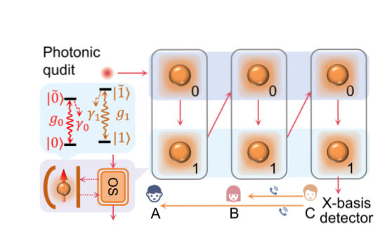
Summary. This paper proposes a resource-efficient protocol for generating multiple GHZ states in parallel across a quantum network using time-bin multiplexing. By using a single photon to entangle multiple nodes simultaneously, the method reduces the complexity of optical modulations and the necessary coherence time for stationary qubits. This approach offers a scalable pathway for building large-scale multinode quantum networks.
Why it may be interesting. It presents a scalable architecture for quantum networks that drastically relaxes the stringent requirements on qubit coherence and experimental control, which is highly relevant for developing practical quantum repeaters and distributed quantum computing.
Main problem. Generating multipartite entanglement across multiple remote quantum nodes is limited by exponential photon loss in optical fibers and requires high coherence times and complex control.
Main result. The proposed protocol enables parallel generation of M GHZ states among N nodes using time-bin multiplexing, significantly reducing the required coherence time for stationary qubits and the complexity of photonic modulations.
Method. A time-bin qudit-encoding protocol where a single photon interacts with cavity-qubit units via optical switches, inducing controlled-phase flips, followed by measurement in a generalized X-basis.
Model / system. A network of N spatially separated nodes, each containing M stationary qubits coupled to single-sided cavities, modeled using a four-level atom system and cavity-QED dynamics.
Key observables. Average fidelity (F_M,N) and average efficiency (eta_M,N) of the generated GHZ states.
Important parameters / regimes. Node distance (L0), photon qudit dimension (d=2M), cooperativity (Cs), detuning (Delta_s), and qubit coherence times (T1, T2).
Assumptions / limitations. The dimension of the photonic qudit is strictly tied to the number of parallel GHZ states being generated (d=2M).
Figures summary. Figure 1 provides a schematic of the protocol for M=2 and N=3, illustrating the photon's path through nodes A, B, and C and its interaction with cavity-qubit units.
Paper structure. The paper introduces the challenge of scaling quantum networks, proposes a time-bin multiplexing protocol, describes the physical model and interaction mechanism, presents numerical results for fidelity and efficiency, and compares the protocol's advantages against conventional schemes.
Nonlocal entanglement generation among multiple remote quantum nodes provides a critical foundation for a variety of counterintuitive quantum applications. The exponential loss of photons transmitting over optical fibers sets an upper limit for entangling these quantum nodes. Here, we propose a resource-efficient and parallel protocol for entangling multiple remote quantum nodes via time-bin multiplexing. The transmission of a single photon with qudit-encoding in the time-bin mode enables entangling multiple stationary qubits in parallel, when single photons and individual stationary qubits interfaces are used and photon-state modulations are properly introduced before subsequently impinging the photon into each interface. Our protocol can generate parallel multipartite entanglement among ($N\geq3$) quantum nodes with the dimension of the photonic time bins independent of $N$, exponentially reducing the requirements for the coherence time of the stationary qubits and for the complexity of the photonic modulations. These distinct features make our protocol particularly advantageous for the development of multinode quantum networks.
Authors: Karl Svozil
Type: theory · Category: other · PDF: https://arxiv.org/pdf/2605.03807v1
Analysis basis: full PDF text, analyzed in chunks
Topic relevance: entanglement & information structure 3/5 · correlated / nonlocal dissipation 2/5 · non-equilibrium dynamics 2/5 · quantum measurements 2/5
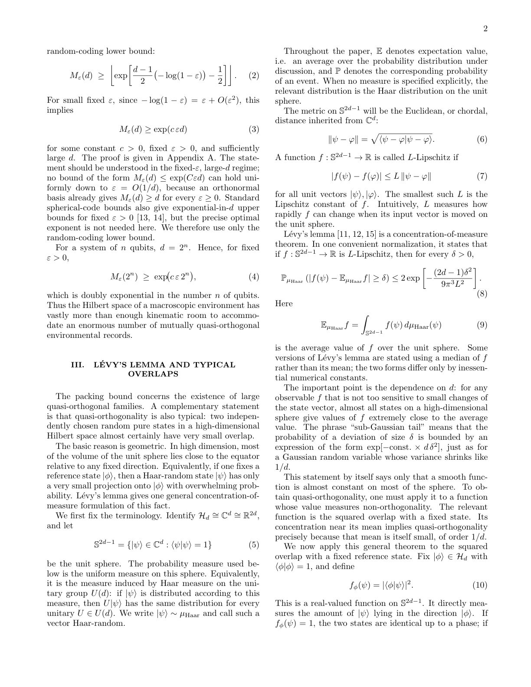
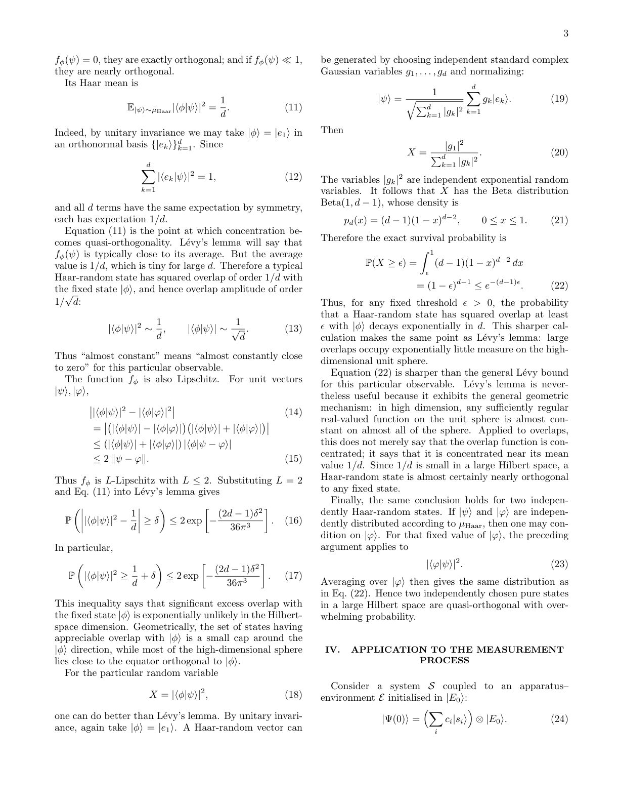
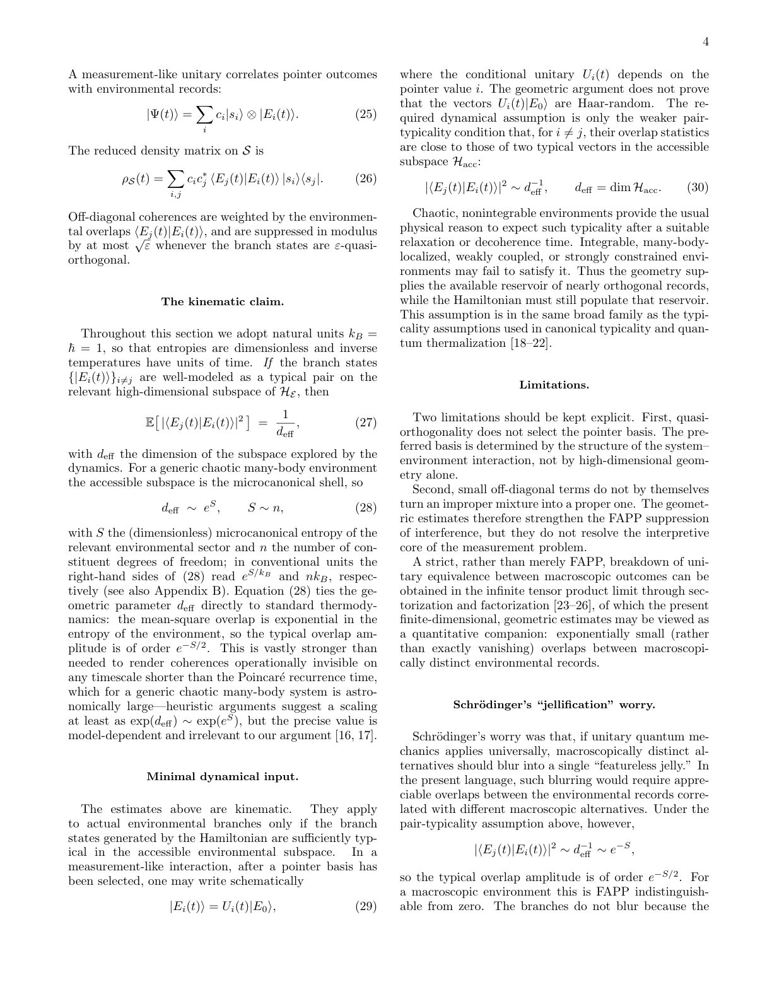
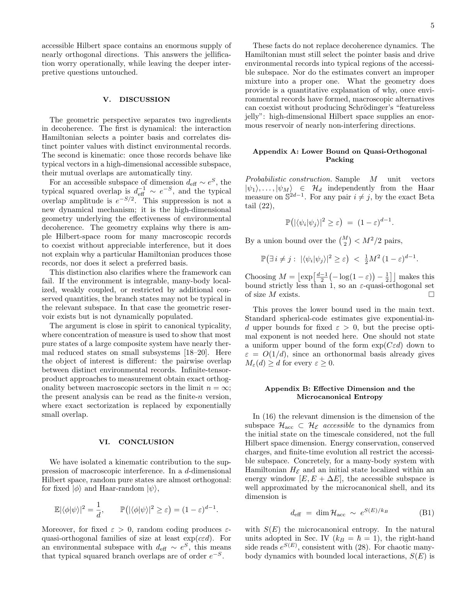
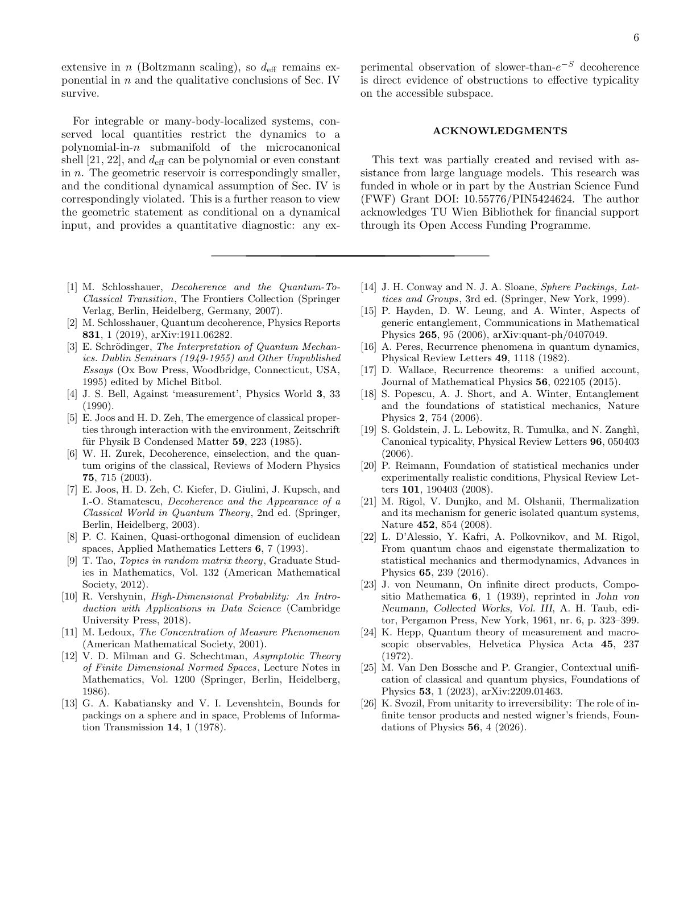
Summary. The paper identifies a geometric mechanism for decoherence based on the fact that in high-dimensional Hilbert spaces, almost all states are nearly orthogonal. This 'kinematic' property provides an enormous capacity for environmental records, ensuring that macroscopic quantum superpositions are suppressed. The effect is most robust in chaotic systems where the accessible Hilbert space dimension is exponentially large.
Why it may be interesting. It provides a fundamental geometric perspective on the emergence of classicality and the effectiveness of decoherence, which is highly relevant for researchers studying open quantum systems and the transition from quantum to classical regimes.
Main problem. The paper investigates the geometric/kinematic contribution to decoherence, specifically addressing why macroscopic quantum alternatives do not blur into a featureless state in high-dimensional Hilbert spaces.
Main result. The authors demonstrate that high-dimensional Hilbert spaces possess an exponentially large capacity for mutually quasi-orthogonal environmental records, providing a geometric mechanism that suppresses macroscopic interference.
Method. The study employs high-dimensional geometry, including the concentration of measure on spheres, Lévy's Lemma, and the Beta distribution to analyze the overlap of Haar-random vectors.
Model / system. A system coupled to a macroscopic environment modeled as a high-dimensional Hilbert space, where the effective dimension scales with the microcanonical entropy of the environment.
Key observables. The squared overlap between environmental branch states, |
Important parameters / regimes. The dimension (d) of the Hilbert space, the epsilon-quasi-orthogonality threshold, and the effective dimension (deff) related to microcanonical entropy.
Assumptions / limitations. The argument is conditional on the dynamics being able to populate the available geometric reservoir; it assumes the Hamiltonian drives the system into typical regions of the accessible subspace.
Paper structure. The paper first establishes the geometric mechanism of quasi-orthogonality, then distinguishes between dynamical and kinematic ingredients of decoherence, and finally examines how dynamical constraints (like integrability or MBL) affect the effective dimension and the validity of the geometric reservoir.
We isolate a geometric mechanism that complements the dynamical suppression of macroscopic interference: In a high-dimensional Hilbert space, almost all state vectors are nearly orthogonal, accommodating an exponentially large reservoir of mutually quasi-orthogonal environmental records. This geometry explains why macroscopic alternatives fail to exhibit visible interference once such records are populated. The argument is conditional and finite-dimensional, and it leaves the interpretive core of quantum mechanics untouched: geometry alone does not select a pointer basis, does not guarantee that a given Hamiltonian drives the system into typical regions of the accessible subspace, and does not turn an improper mixture into a proper one. It merely supplies the vast Hilbert-space capacity that makes decoherence so overwhelmingly effective for all practical purposes.
Authors: Abhishek Sadhu, Sharu Theresa Jose
Type: theory · Category: quantum information and computing · PDF: https://arxiv.org/pdf/2605.03629v1
Analysis basis: full PDF text, analyzed in chunks
Topic relevance: correlated / nonlocal dissipation 3/5 · entanglement & information structure 3/5 · methods for driven-dissipative 2/5
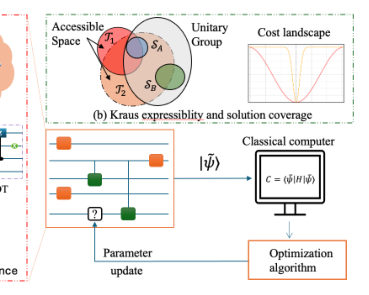
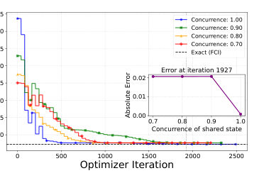
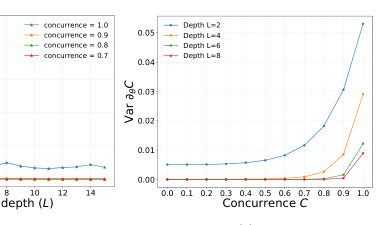
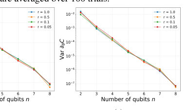
Summary. This paper explores how an adversary can corrupt the shared entanglement used in distributed quantum computing to sabotage variational algorithms. It introduces a new metric called Kraus expressibility to quantify how noise affects the ability of a circuit to represent solutions and shows that attackers can bias results without triggering the vanishing gradients known as barren plateaus.
Why it may be interesting. This paper is highly relevant to researchers in open quantum systems and quantum networks as it provides a rigorous framework for understanding how structured noise in quantum communication channels directly degrades the performance and security of distributed quantum algorithms.
Main problem. Investigating how adversarial perturbations to shared entanglement in distributed quantum computing impact the expressibility and trainability of Variational Quantum Algorithms (VQAs).
Main result. The authors demonstrate that an adversary can manipulate entanglement-level noise to bias optimization toward incorrect solutions while avoiding detection via barren plateaus, and they establish a new metric, Kraus expressibility, to quantify this effect.
Method. The study uses a Kraus representation framework to map entanglement perturbations to gate-level noise, introduces the Kraus expressibility norm, and employs gradient variance analysis to link noise to trainability.
Model / system. A distributed quantum architecture consisting of multiple NISQ processors connected via a quantum repeater network using the cat-entangler/cat-disentangler protocol for non-local CNOT gates.
Key observables. Kraus expressibility norm, cost function gradient variance, concurrence, and state purity.
Important parameters / regimes. Circuit depth (L), number of qubits (n), degree of parameter initialization confinement (r), and entanglement concurrence (C).
Assumptions / limitations. The analysis focuses on adversarial attacks via the entanglement-sharing layer and assumes the use of the cat-entangler protocol for non-local gates.
Figures summary. Figure 1 illustrates different adversarial models (network vs. device level) and the restriction of solution space; Figure 2 shows energy convergence failure in VQE under adversarial noise; Figure 3 shows the decay of Kraus expressibility and gradient variance with depth and noise; Figure 4 shows the scaling of gradient variance with qubit number under different noise levels.
Paper structure. The paper begins by defining the vulnerability of distributed VQAs, introduces a mathematical framework for mapping entanglement noise to Kraus operators, defines the new Kraus expressibility metric, provides analytical bounds on gradient variance, and validates the theory through numerical simulations of VQE and scaling analysis.
Distributed quantum algorithms offer a promising pathway to scale variational quantum algorithms beyond the constraints of noisy intermediate-scale quantum hardware. However, existing approaches implicitly assume a trusted entanglement-sharing layer across quantum processors. We show that this assumption introduces a fundamental vulnerability: adversarial perturbations of shared entanglement induce structured gate-level noise that directly impacts quantum learning. We develop a framework that maps entanglement-level perturbations to gate-level noise via an explicit Kraus representation. To quantify their impact, we introduce Kraus expressibility, a metric that generalizes unitary expressibility to noisy quantum channels. We then establish a trade-off between Kraus expressibility and trainability of noisy quantum circuits through gradient variance analysis. Our analysis reveals that an adversary can manipulate Kraus expressibility to maintain sufficiently large cost gradients (avoiding barren plateaus) while systematically biasing optimization toward incorrect solutions. We validate these findings through numerical simulations, demonstrating adversarial degradation of expressibility and trainability.
Authors: Ali Rayat, Gia-Wei Chern
Type: theory · Category: disordered systems and neural networks · PDF: https://arxiv.org/pdf/2605.03901v1
Analysis basis: full PDF text, analyzed in chunks
Topic relevance: non-equilibrium dynamics 3/5 · analog quantum simulation 2/5 · Keldysh / 2PI / non-Gaussian methods 1/5 · entanglement & information structure 1/5
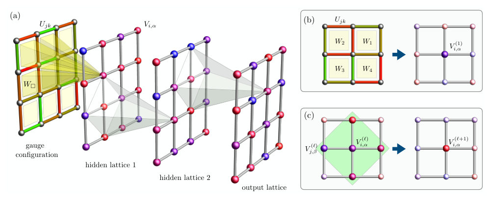
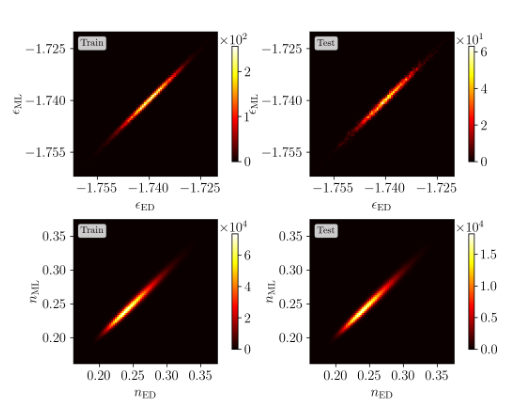
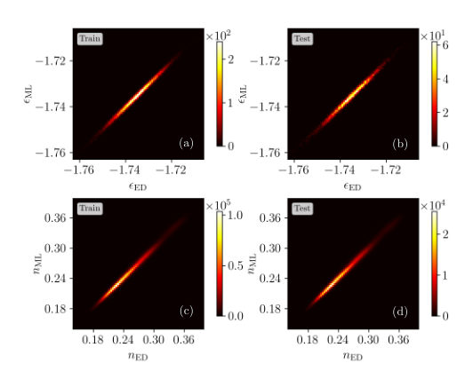
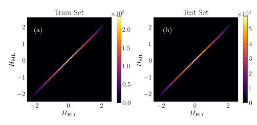
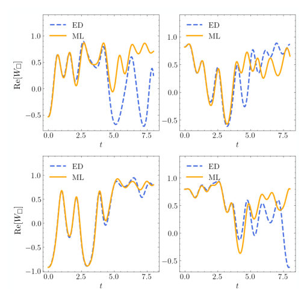
Summary. The authors present a Graph Neural Network that operates directly on gauge-invariant Wilson loops to simulate Abelian lattice gauge theories. The model efficiently predicts both static properties and semiclassical dynamics, offering a powerful tool for studying complex gauge-matter interactions without the overhead of redundant gauge degrees of freedom.
Why it may be interesting. This work is highly relevant for many-body dynamics as it provides a scalable way to simulate the time evolution of gauge-matter systems, bypassing the computational bottleneck of repeated exact diagonalization.
Main problem. Developing an efficient machine learning framework for Abelian lattice gauge theories that handles gauge redundancy and captures nonlocal correlations induced by gauge-matter coupling.
Main result. The proposed gauge-invariant GNN accurately predicts local and global observables in Z2 and U(1) models and serves as a scalable surrogate for semiclassical dynamics, capturing statistical properties like autocorrelation functions.
Method. A Graph Neural Network (GNN) architecture using gauge-invariant Wilson loop inputs and message passing, combined with automatic differentiation to reconstruct gauge-covariant forces for dynamics.
Model / system. Abelian lattice gauge theories (Z2 and U(1)) and U(1) quantum link models on a square lattice, featuring gauge-matter coupling via a tight-binding Hamiltonian.
Key observables. Wilson loops (plaquette and winding), local fermion density, total energy, and autocorrelation functions.
Important parameters / regimes. Inverse temperature (beta), chemical potential (mu), kinetic scale (tau), electric coupling (g), and magnetic strength (K).
Assumptions / limitations. The architecture is specifically tailored for Abelian theories and assumes the gauge-invariant sector can be captured by local and global Wilson loops; dynamical results are currently limited to the semiclassical regime.
Figures summary. Figure 1 illustrates the GNN architecture, showing the mapping from gauge configurations to Wilson loops and the message-passing process. Figure 2 contains heat maps comparing GNN predictions.
Paper structure. The paper introduces a gauge-invariant GNN architecture, benchmarks its performance on static observables in Z2 and U(1) models, and then demonstrates its utility as a surrogate for semiclassical time evolution in quantum link models.
Local gauge structures play a central role in a wide range of condensed matter systems and synthetic quantum platforms, where they emerge as effective descriptions of strongly correlated phases and engineered dynamics. We introduce a gauge-invariant graph neural network (GNN) architecture for Abelian lattice gauge models, in which symmetry is enforced explicitly through local gauge-invariant inputs, such as Wilson loops, and preserved throughout message passing, eliminating redundant gauge degrees of freedom while retaining expressive power. We benchmark the approach on both $\mathbb{Z}_2$ and $\mathrm{U}(1)$ lattice gauge models, achieving accurate predictions of global observables and spatially resolved quantities despite the nonlocal correlations induced by gauge-matter coupling. We further demonstrate that the learned model serves as an efficient surrogate for semiclassical dynamics in $\mathrm{U}(1)$ quantum link models, enabling stable and scalable time evolution without repeated fermionic diagonalization, while faithfully reproducing both local dynamics and statistical correlations. These results establish gauge-invariant message passing as a compact and physically grounded framework for learning and simulating Abelian lattice gauge systems.
Authors: Areeda Ayoub, Alfonso Castillo-Gonzalez, Eric R Bittner
Type: theory · Category: quantum information and computing · PDF: https://arxiv.org/pdf/2605.03978v1
Analysis basis: abstract only; PDF text extraction failed or PDF unavailable
Topic relevance: entanglement & information structure 3/5 · methods for driven-dissipative 2/5 · non-equilibrium dynamics 2/5
Summary. This paper shows that the phase of a squeezed reservoir can be used to control steady-state entanglement in open quantum systems. It demonstrates that local dissipation can generate entanglement when paired with coherent coupling, and that the effectiveness of this process depends on the phase reference of the reservoir. This establishes phase-sensitive reservoir engineering as a viable route for creating entanglement in continuous-variable quantum technologies.
Why it may be interesting. It provides a new mechanism for reservoir engineering, showing that the phase of the environment is a controllable knob for generating nonlocal correlations in continuous-variable systems.
Main problem. Investigating how the phase reference of a phase-sensitive reservoir can be used to control and generate steady-state entanglement in open quantum systems.
Main result. The authors demonstrate that local, phase-sensitive dissipation can generate entanglement when combined with coherent coupling, and that the resulting entanglement structure depends explicitly on the reservoir's phase reference.
Method. A covariance-matrix approach for Gaussian-preserving dynamics is used to analyze the steady state of the system.
Model / system. Continuous-variable open quantum systems subject to phase-sensitive (squeezed) dissipation and coherent coupling.
Key observables. Steady-state entanglement (quantified via entanglement measures for Gaussian states) and thermal robustness of entanglement.
Important parameters / regimes. Squeezing strength, coherent coupling strength, and the phase reference of the reservoir (comparing phase-locked/rotating-frame vs. laboratory-frame implementations).
Assumptions / limitations. The dynamics are assumed to be Gaussian-preserving, allowing for the use of the covariance-matrix formalism.
Paper structure. The paper introduces the concept of phase-reference control, applies a covariance-matrix approach to Gaussian dynamics, analyzes the role of squeezing and coupling, compares different phase-reference frames, and concludes with the implications for reservoir engineering.
We show that steady-state entanglement in open quantum systems is controlled by the phase reference of a phase-sensitive reservoir. Using a covariance-matrix approach for Gaussian-preserving dynamics, we demonstrate that purely local, phase-sensitive dissipation can generate entanglement when combined with coherent coupling. The steady state exhibits a finite entangled region with an optimal squeezing strength that maximizes both the magnitude and thermal robustness of entanglement. We find that coherent coupling does not enhance entanglement monotonically, but instead regulates the conversion of local squeezing into nonlocal correlations. Importantly, the coupling dependence is controlled by the phase reference of the squeezed reservoir: phase-locked (rotating-frame) and laboratory-frame implementations yield qualitatively distinct steady states and entanglement structure. These results establish phase-sensitive reservoir engineering as a controllable route to steady-state entanglement in continuous-variable systems. Steady-state entanglement in phase-sensitive open systems depends explicitly on the reservoir phase reference and is not invariant under changes of that reference.}
Authors: Elhabib Jaloum, Mohamed Amazioug
Type: theory · Category: quantum information and computing · PDF: https://arxiv.org/pdf/2605.03831v1
Analysis basis: full PDF text, analyzed in chunks
Topic relevance: entanglement & information structure 3/5 · non-equilibrium dynamics 2/5 · quantum measurements 2/5
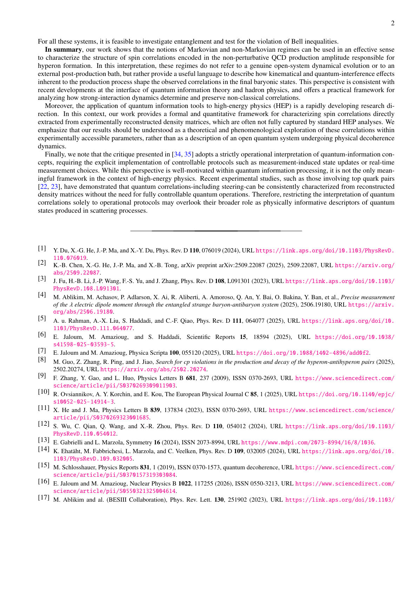
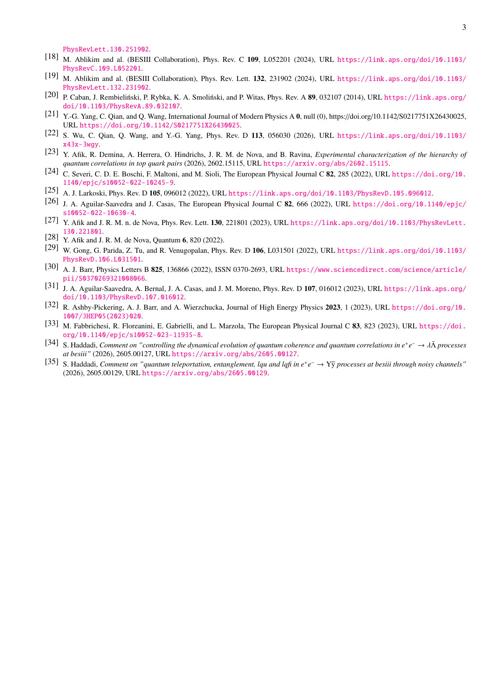
Summary. This paper is a formal rebuttal defending the use of quantum information metrics to study spin correlations in particle physics. The authors argue that the complex dynamics of QCD fragmentation can be validly modeled as an internal environment affecting the entanglement and steering of produced baryon pairs.
Why it may be interesting. It explores the application of open quantum system concepts (decoherence and non-Markovianity) to a high-energy particle production process, treating particle interactions as an internal environment.
Main problem. The authors are rebutting a critique regarding the physical validity of using quantum information concepts, such as decoherence and quantum steering, to describe particle production in high-energy physics.
Main result. The authors defend their model by demonstrating that QCD fragmentation and hadronization can be treated as an effective internal environment that influences spin correlations.
Method. The authors use quantum information theory tools, including quantum steering, entanglement, and discord, applied to reconstructed spin density matrices from angular distributions.
Model / system. The system is the production of Lambda-antiLambda (Lambda-bar) baryon pairs in electron-positron annihilation processes at the BESIII experiment, modeled as an effective open bipartite system.
Key observables. Spin-spin correlations, phi angular distributions, and violations of steering inequalities.
Important parameters / regimes. Timelike electromagnetic form factors (EMFFs) and the distinction between Markovian and non-Markovian regimes.
Assumptions / limitations. The model assumes an effective description where the QCD fragmentation phase acts as a dynamic internal environment rather than an external post-production bath.
Paper structure. The paper is structured as a point-by-point rebuttal, addressing the physical basis of the environment, the validity of steering measurements, and the rejection of operational measurement constraints.
We thank the Commentator for his detailed critique, which provides an opportunity to clarify the physical foundations of our work. While we appreciate the emphasis on rigor when applying quantum information concepts to high-energy physics (HEP), we respectfully disagree with the assertion that our assumptions lack a physical or operational basis. In the following sections, we address each point raised, demonstrating that our modeling is grounded in the established physics of QCD fragmentation and production dynamics in $e^+e^-\to Λ\barΛ$, as supported by recent experimental and theoretical advancements. Our approach treats the system as an effective open bipartite system during the intrinsic production stage, rather than during post-production propagation, which aligns with the analyses cited in our references.
Authors: David Hambraeus, Paul Burger, Johan Kolvik, Philippe Tassin, Raphaël Van Laer
Type: both · Category: quantum information and computing · PDF: https://arxiv.org/pdf/2605.03910v1
Analysis basis: full PDF text, analyzed in chunks
Topic relevance: QC/QI experiment 3/5 · quantum optics experiment 3/5
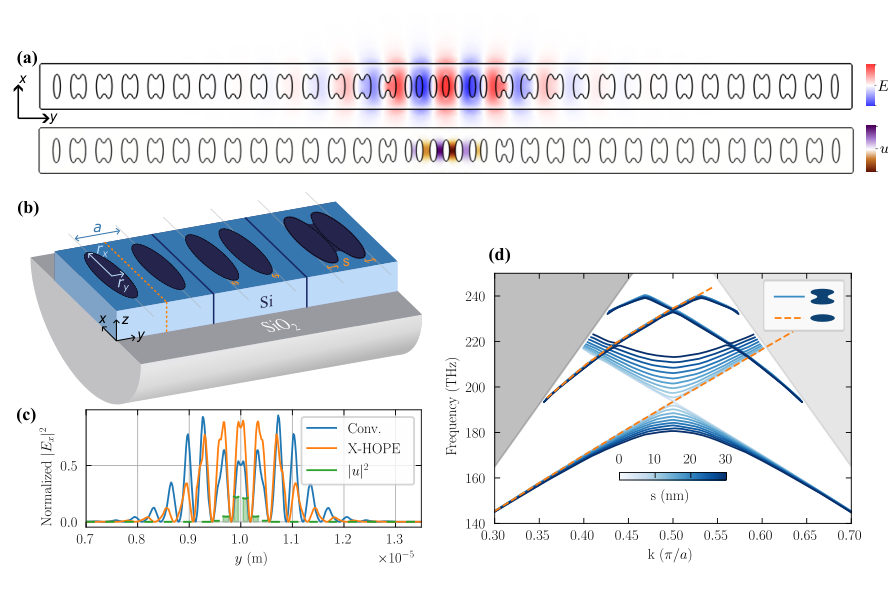
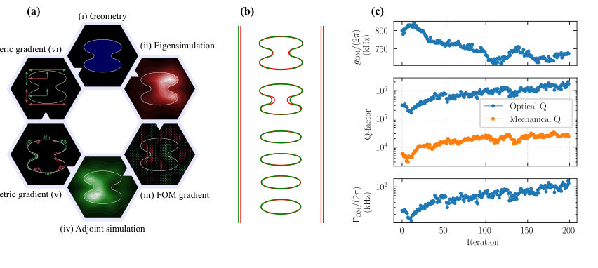
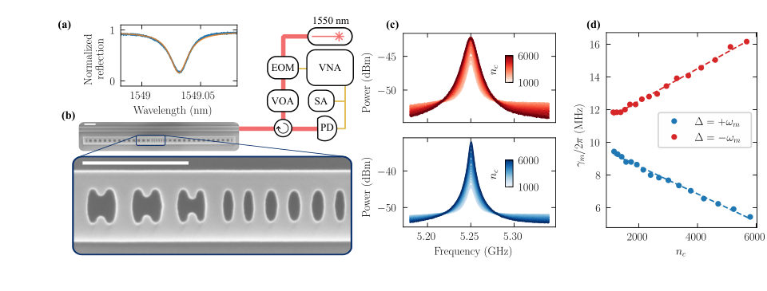
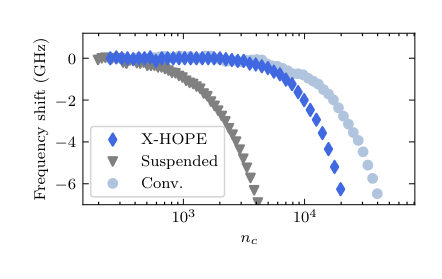
Summary. The researchers developed a new way to design optomechanical crystals that are attached to their substrate rather than suspended. By using an advanced inverse-design algorithm, they achieved extremely high light-matter coupling rates that rival suspended devices while preventing the device from overheating. This makes it a much more robust platform for quantum technologies.
Why it may be interesting. This work provides a scalable, thermally stable platform for quantum transducers and microwave-to-optical frequency conversion, which are essential for building large-scale quantum networks.
Main problem. The trade-off in optomechanical crystals between high photon-phonon coupling strength and thermal robustness, where suspended structures provide high coupling but suffer from laser-induced heating.
Main result. The demonstration of a release-free silicon optomechanical crystal with a record vacuum coupling rate of 800 kHz, achieving performance comparable to suspended devices while maintaining superior thermal stability.
Method. A combination of the X-HOPE physics-guided technique to match wavevectors and a multiphysics gradient-based inverse-design algorithm using adjoint sensitivity analysis.
Model / system. A release-free silicon-on-insulator (220 nm Si on 2 um SiO2) optomechanical crystal architecture that is mechanically attached to the substrate to allow for efficient heat dissipation.
Key observables. Vacuum optomechanical coupling rate (g_OM), optomechanical scattering rate (Gamma_OM), optical quality factor (Q_o), and thermo-optic frequency shift.
Important parameters / regimes. g_OM/2pi approx 800 kHz, mechanical frequency 5.25 GHz, optical frequency 193.5 THz, and room-temperature operation.
Assumptions / limitations. The design assumes the ability to mitigate fabrication errors through stochastic erosion/dilation and focuses on radiation-limited performance as a benchmark.
Figures summary. Figure 1 shows mode overlap and band structure for the X-HOPE design; Figure 2 illustrates the inverse-design algorithm workflow; Figure 3 presents experimental spectral data and coupling measurements; Figure 4 compares thermal stability across different architectures.
Paper structure. The paper identifies the optomechanical coupling/thermal trade-off, introduces the X-HOPE and inverse-design methodologies, details the experimental fabrication and measurement setup, presents the record-high coupling results, and concludes with a robustness analysis against fabrication imperfections.
Interactions between light and mechanics provide a powerful interface between optical and microwave-frequency signals, with applications spanning classical signal processing and quantum technologies. High-performance optomechanical devices require both strong photon-phonon coupling and tolerance to parasitic laser heating. Release-free optomechanical crystals provide improved thermal anchoring compared to suspended nanobeams, but have so far exhibited weaker vacuum optomechanical coupling rates, leaving a trade-off between coupling strength and thermal robustness. Here, we largely close this gap: we design and experimentally demonstrate a release-free silicon optomechanical crystal with a record vacuum optomechanical coupling rate of about $g_\text{OM} / (2 π) = 800$ kHz, comparable to suspended state-of-the-art devices. The resulting optomechanical scattering rate $Γ_\text{OM}/(2 π)= 1.1$ kHz is nearly twice that of previous release-free implementations. This performance is achieved by combining physics-guided human intuition with a multiphysics inverse-design algorithm introduced here for resonant optomechanical structures. Beyond the specific device demonstrated, the inverse-design framework is applicable to co-optimizing optical and mechanical resonances and eigenmodes more broadly. These results strengthen release-free optomechanical crystals as a platform for fast, low-noise classical and quantum optomechanics.
Authors: Daniel Centeno, Antoine Coquet, Maria Ciudad Alañón, Lucas Tendick, Marc-Olivier Renou, Elie Wolfe
Type: theory · Category: quantum information and computing · PDF: https://arxiv.org/pdf/2605.03132v1
Analysis basis: full PDF text, analyzed in chunks
Topic relevance: entanglement & information structure 3/5 · quantum measurements 2/5
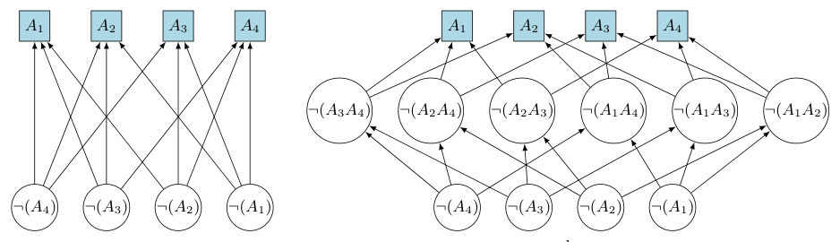
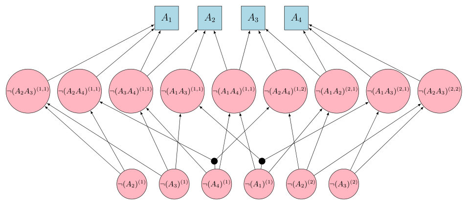
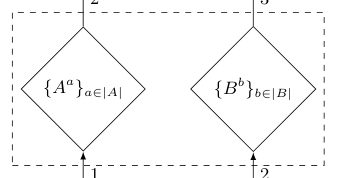
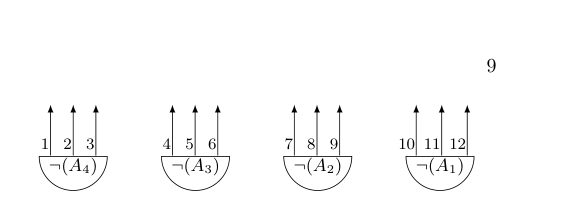
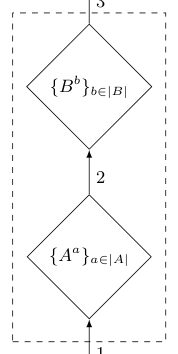
Summary. This paper introduces the Coordination Principle, stating that perfect agreement among multiple parties implies a shared common cause. It proves that quantum mechanics obeys this principle even in complex causal networks and provides new inequalities to experimentally certify common causes in multipartite GHZ states.
Why it may be interesting. This is highly relevant for researchers in quantum networks and quantum optics as it provides new experimental tools (Bell-like inequalities) to certify the existence of shared quantum resources and common causes in multipartite systems.
Main problem. The paper investigates whether the 'Coordination Principle'—the idea that perfect agreement on a random output among N parties requires a shared common cause—is a fundamental causal principle or merely a consequence of No-Signaling and Independence.
Main result. The authors prove that quantum theory satisfies the Coordination Principle in any causal network, even with intermediate transformations, and derive noise-tolerant Bell-like inequalities to certify the presence of a common cause.
Method. The study employs the 'Quantum Inflation' technique to expand causal structures, uses the NPA hierarchy for semidefinite programming, and constructs a counterexample using an Operational Probabilistic Theory (OPT) to show the principle is independent of No-Signaling.
Model / system. The framework uses Directed Acyclic Graphs (DAGs) to represent causal structures, specifically studying multipartite GHZ states and complex scenarios like the two-layer tetrahedron model.
Key observables. Correlations between adjacent parties (e.g.,
Important parameters / regimes. The number of parties (N), the white noise visibility parameter (v), and the fidelity (f) of the GHZ state.
Assumptions / limitations. The proofs assume the use of pure states, unitary transformations, and projective measurements; it also assumes the possibility of device replication in certain contexts.
Figures summary. Figures illustrate various causal DAG structures, the quantum cut inflation construction, diagrammatic representations of tests and circuits in the counterexample OPT, and plots showing the violation of inequalities as a function of noise visibility.
Paper structure. The paper introduces the Coordination Principle, proves quantum theory satisfies it using inflation techniques, provides a counterexample OPT where the principle fails, derives noise-robust Bell-like inequalities, and applies these to GHZ state certification.
We introduce the coordination principle, which states that perfect coordination, in the form of agreement on a uniformly random output, among N parties is possible only if they share a common cause. This principle is purely causal and can be viewed as a multipartite generalization of Reichenbach's common cause principle. We prove that quantum information theory satisfy the coordination principle in any network, and derive noise-tolerant Bell-like inequalities that certify the presence of a common cause. We further show that the principle is not a consequence of no-signaling and independence alone by constructing a concrete operational probabilistic theory that obeys both principles while still allowing perfect coordination without a common cause. This possibility arises only in fully general causal scenarios with intermediate transformations between preparations and measurements. We also formulate a genuinely quantum coordination task, showing that the preparation of a multipartite GHZ state requires a quantum common cause, which can be certified by Bell-like inequalities which are experimentally testable. Finally, we discuss the open problem of finding a quantitative, noise-tolerant version of the coordination principle that constrains approximate coordination in any reasonable causal theory. This work is the extended version of the more compact letter and provides all the technical details of the proofs.
Authors: Sonia, Satyabrata Adhikari
Type: theory · Category: quantum information and computing · PDF: https://arxiv.org/pdf/2605.03605v1
Analysis basis: full PDF text, analyzed in chunks
Topic relevance: entanglement & information structure 3/5 · quantum measurements 2/5
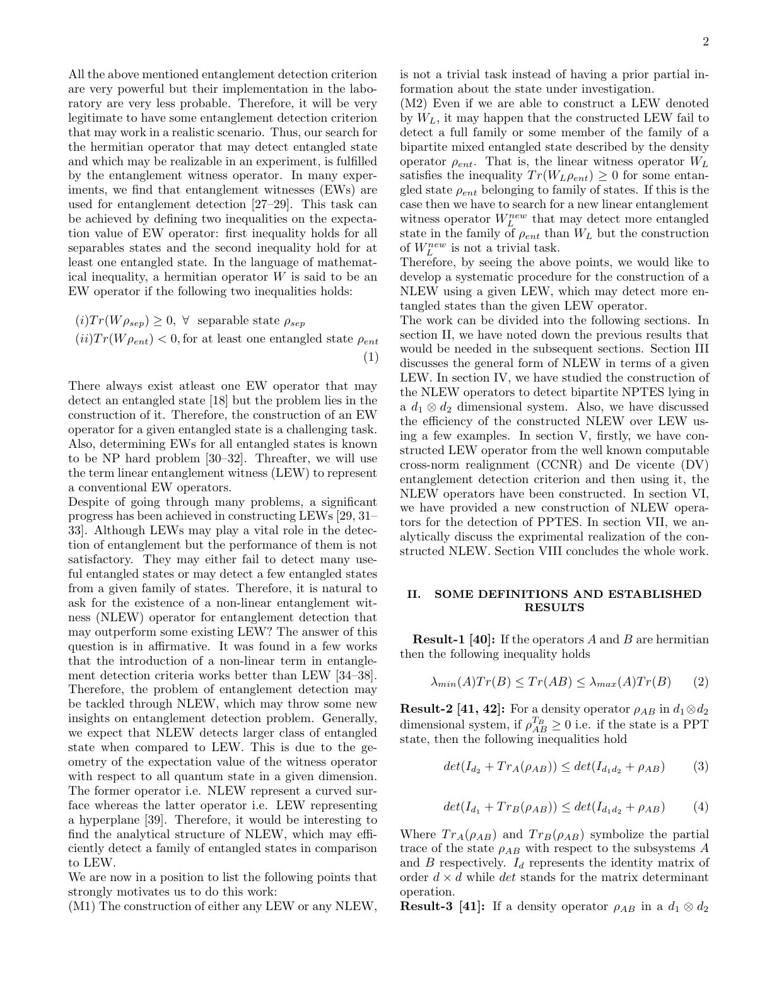
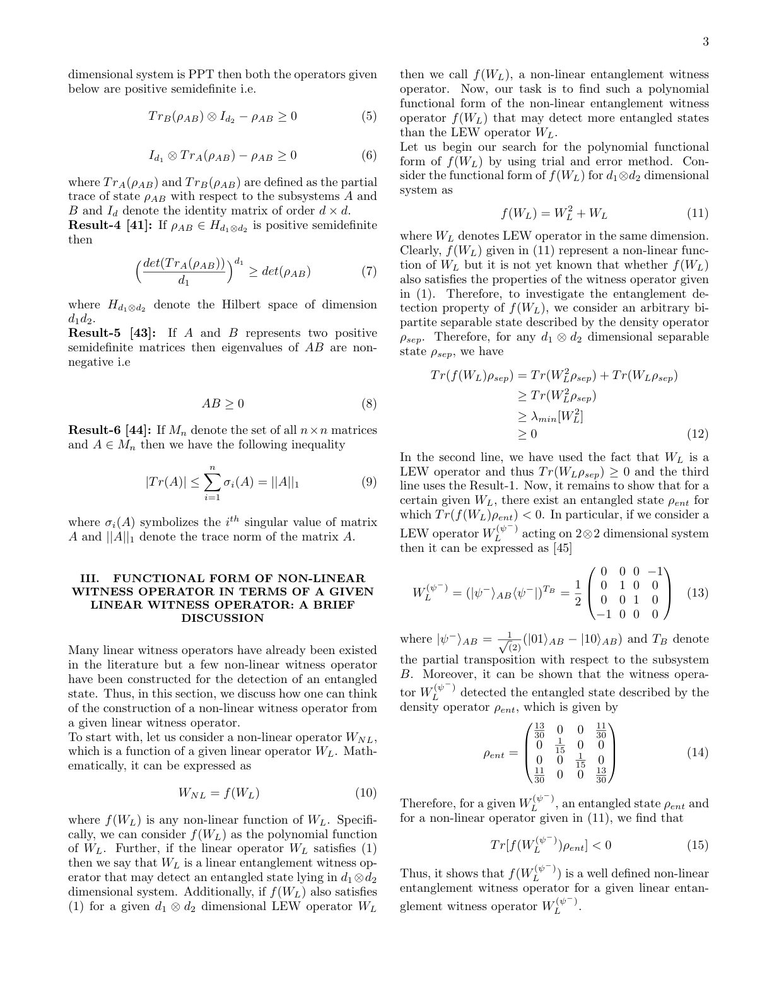
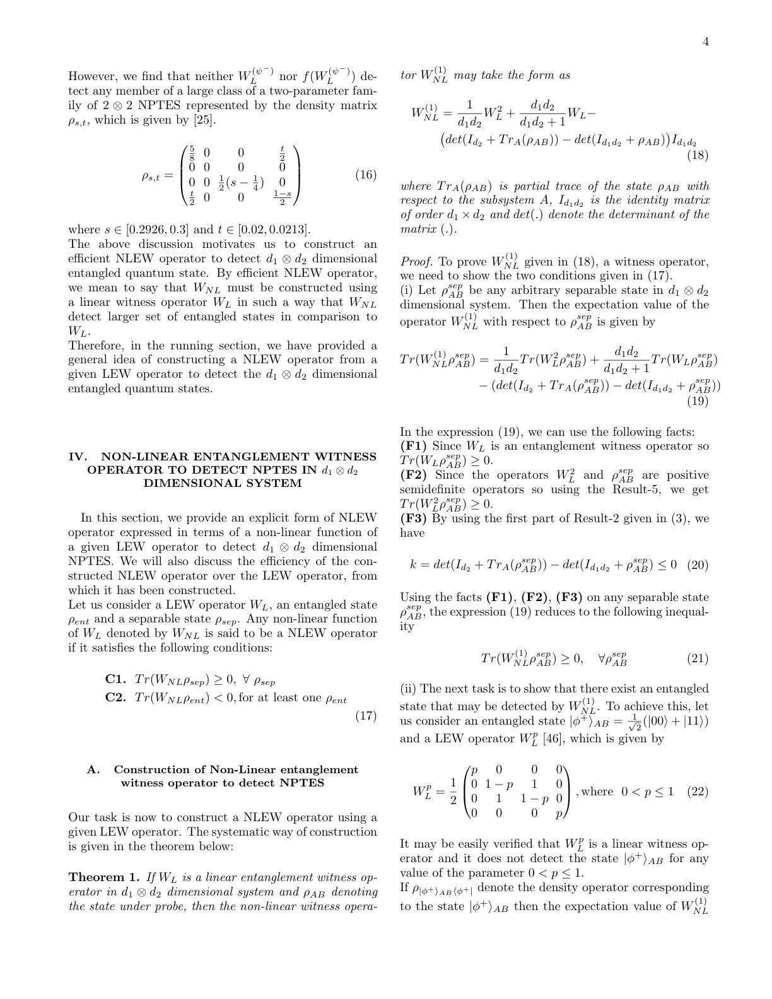
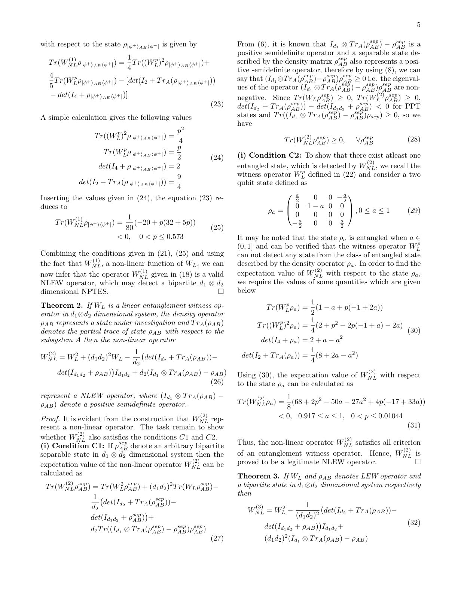
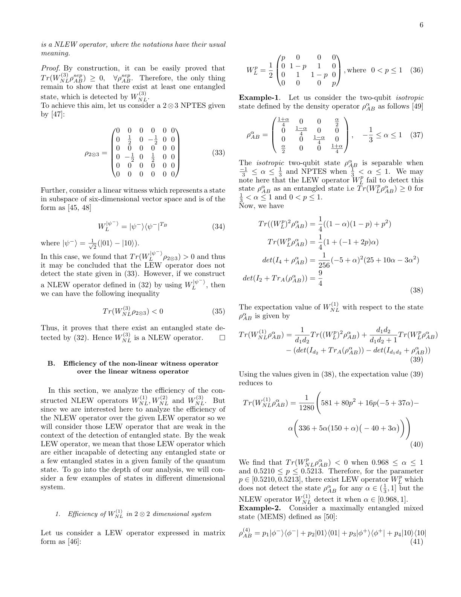
Summary. This paper presents a method to transform standard linear entanglement witnesses into more powerful non-linear versions. These new operators can detect a wider range of entangled states, including difficult-to-identify positive partial transpose entangled states, and are designed to be implementable using local measurements.
Why it may be interesting. This is relevant for quantum information theorists as it provides a practical, experimentally realizable method to identify complex entanglement (like bound entanglement) that is otherwise invisible to standard linear detection methods.
Main problem. The difficulty of detecting all types of entanglement, particularly Positive Partial Transpose Entangled States (PPTES), using traditional Linear Entanglement Witnesses (LEW) which often fail to detect certain entangled states.
Main result. The authors provide a systematic constructive approach to derive Non-Linear Entanglement Witnesses (NLEW) from existing LEWs, demonstrating that these NLEWs can detect a larger class of both NPTES and PPTES.
Method. A constructive mathematical framework using polynomial functional forms of LEWs, involving determinants, partial traces, and trace norms to transform linear operators into non-linear ones.
Model / system. Bipartite quantum systems in arbitrary dimensions (d1 x d2), with specific analyses performed on qubit-qubit (2x2), qubit-qutrit (2x3), and qutrit-qutrit (3x3) systems.
Key observables. Expectation value of the witness operator (Tr(W rho)), which indicates entanglement if negative.
Important parameters / regimes. Parameters defining specific state families such as alpha (isotropic states), p (LEW parameter), gamma (qutrit isotropic states), and x (qutrit PPTES parameter).
Assumptions / limitations. The construction assumes the existence of a known LEW and relies on the assumption that the maximum of a sum of expectation values is bounded by the sum of their individual maximums.
Paper structure. The paper introduces the functional form of NLEWs, provides specific constructions for NPTES, utilizes CCNR and De Vicente criteria for construction, presents a new method for PPTES detection, and concludes with a discussion on experimental realization via local observables.
Entanglement detection is one of the important problems in quantum information theory. To deal with this problem, many entanglement detection criteria have been proposed. Among the proposed criteria, the detection of entanglement through witness operator (also known as linear entanglement witness (LEW) operator) may be considered as the most practical. Although the witness operator approach to detect entanglement is experimentally friendly, the construction of these operators is not a very simple task. Even if we are able to construct a LEW operator, our problem is not solved as it may either detect a few entangled states or not a single entangled state from a given family of entangled states. Thus, we need a constructive approach in order to tackle this type of problem. In this work, we provide a few constructions of the non-linear entanglement witnesses (NLEW) for $d_1\otimes d_2$ dimensional system from any linear entanglement witness (LEW) operator. The advantage of these constructions is that, if a LEW is unable to detect any particular entangled state described by the density operator $ρ^{ent}$ then our construction of NLEW may detect the same entangled state $ρ^{ent}$. Further, we have constructed NLEW operator that may detect not only a class of bipartite negative partial transpose entangled state (NPTES), but also positive partial transpose entangled state (PPTES). Moreover, we have shown that the constructed NLEW operators may be decomposed in terms of the tensor product of local observables and hence may be realizable in an experiment.
Authors: Daniel Centeno, Antoine Coquet, Maria Ciudad Alañón, Lucas Tendick, Marc-Olivier Renou, Elie Wolfe
Type: theory · Category: quantum information and computing · PDF: https://arxiv.org/pdf/2605.03120v1
Analysis basis: full PDF text, analyzed in chunks
Topic relevance: entanglement & information structure 3/5 · quantum measurements 2/5
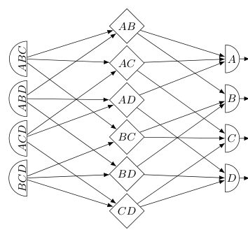
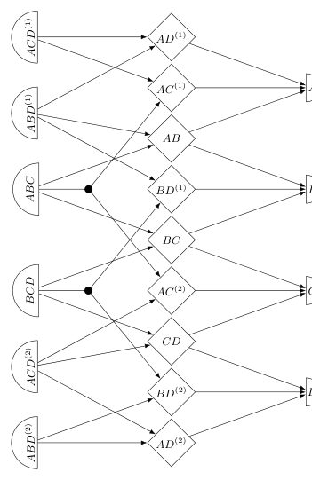
Summary. The paper demonstrates that in quantum theory, achieving perfect coordination among multiple parties is only possible if they share a common cause. It distinguishes quantum theory from other possible theories that satisfy standard causality principles but allow coordination without a common cause. Finally, it provides Bell-like inequalities to certify these common causes in noisy experimental settings.
Why it may be interesting. This work is highly relevant for quantum information and quantum optics as it establishes a new fundamental causal principle for quantum theory and provides practical, noise-robust tools for certifying multipartite entanglement and causal structures.
Main problem. Investigating whether the 'Coordination Principle'—the idea that perfect randomized coordination among multiple parties requires a common cause—is a fundamental property of quantum theory or merely a consequence of No-Signaling and Independence principles.
Main result. The authors prove that quantum theory satisfies the Coordination Principle, whereas other operational probabilistic theories satisfying No-Signaling and Independence do not. They also derive noise-tolerant Bell-like inequalities to experimentally certify the presence of a common cause.
Method. The authors use an Operational Probabilistic Theory (OPT) framework, employing a 'quantum inflation technique' and Sum of Squares (SOS) arguments to derive contradictions in circuits lacking a common cause.
Model / system. A network of N parties (specifically analyzed for N=4) connected via a causal circuit involving sources, intermediate channels, and measurement nodes, involving both classical bit coordination and quantum GHZ state generation.
Key observables. Correlators for bit agreement (e.g., p(a=b)) and fidelity of the 4-partite GHZ state.
Important parameters / regimes. Fidelity threshold (v > 94.17%) for certifying a quantum common cause in a noisy GHZ state.
Assumptions / limitations. The proof assumes that correlations in nature obey the mathematical structure of quantum theory and the Independence principle.
Figures summary. Figure 1 shows a causal circuit for a 4-party coordination task; Figure 2 illustrates the graphical representation of the quantum inflation process.
Paper structure. The paper introduces the Coordination Principle, constructs an OPT that violates it to show NSI is insufficient, proves the principle holds for quantum theory, extends it to quantum coordination tasks (GHZ states), and provides experimental certification tools via inequalities.
We propose a novel causal principle that is a genuinely multipartite extension of Reichenbach's common cause principle, namely, the coordination principle: parties in a network can achieve perfect randomized coordination--in particular, agree on a uniformly random output--only if they all share a common cause. We show that this principle does not follow from the standard no-signaling and independence principles by providing an explicit theory satisfying all these principles while violating the coordination principle. Strikingly, we prove that the coordination principle holds, however, in quantum theory for four parties, and derive noise-tolerant Bell-like inequalities that certify a common cause. We then extend these results to a genuinely quantum coordination task, showing that the four-partite GHZ state requires a quantum common cause which can also be certified by experimentally accessible Bell-like inequalities. A companion paper generalizes these results for N parties, proving that the coordination principle is satisfied in general for quantum theory.
Authors: Tanoy Kanti Konar, Jakub Zakrzewski
Type: theory · Category: quantum information and computing · PDF: https://arxiv.org/pdf/2605.03600v1
Analysis basis: full PDF text, analyzed in chunks
Topic relevance: entanglement & information structure 3/5 · non-equilibrium dynamics 2/5
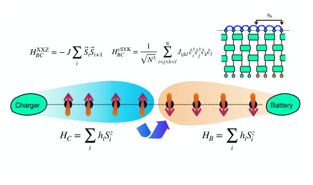
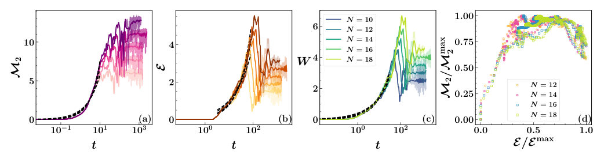
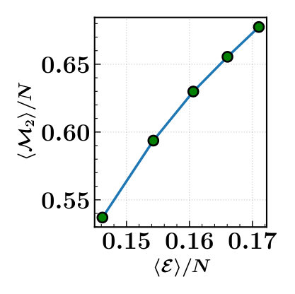
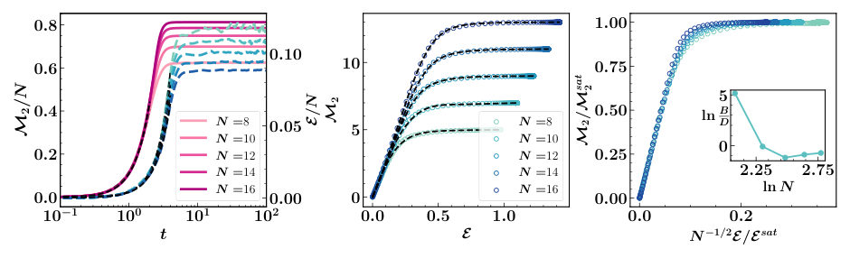
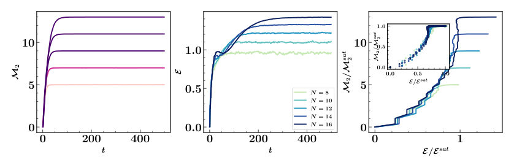
Summary. This paper explores how the complexity of a quantum state, measured by its nonstabilizerness, relates to its capacity to store extractable work in a quantum battery. It finds that while a direct link exists under U(1) symmetry, this relationship disappears in more generic, symmetry-breaking dynamics. The study also demonstrates that high initial complexity is not required to achieve maximum charging power.
Why it may be interesting. It connects the resource theory of magic/nonstabilizerness to quantum thermodynamics, providing new insights into how quantum complexity affects the efficiency of energy storage and extraction in many-body systems.
Main problem. The paper investigates the relationship between nonstabilizerness (magic) and the ability of quantum batteries to store and extract work (ergotropy).
Main result. A one-to-one correspondence between ergotropy and nonstabilizerness emerges in U(1)-symmetric interactions, whereas this link breaks in generic interactions; additionally, initial nonstabilizerness is not a necessary resource for optimal charging power.
Method. The authors use Stabilizer Renyi Entropy (SRE) to quantify nonstabilizerness and perform numerical simulations using XXZ spin chains, cSYK models, and random unitary circuits.
Model / system. A 1D chain of N spin-1/2 particles divided into a charger and a battery, utilizing interaction models such as the XXZ spin chain, the complex Sachdev-Ye-Kitaev (cSYK) model, and brick-wall random unitary circuits.
Key observables. Ergotropy (extractable work), nonstabilizerness (Stabilizer Renyi Entropy), stored energy, and charging power.
Important parameters / regimes. U(1) symmetry vs. symmetry-breaking interactions, system size N, circuit depth t, and the anisotropy parameter gamma.
Assumptions / limitations. The analysis focuses on specific classes of unitary dynamics and assumes the use of SRE as a proxy for the complexity of the quantum state.
Figures summary. Figures show the growth and saturation of SRE and ergotropy over time, parametric plots showing functional relations (like tanh fits) between SRE and ergotropy, and data collapse of scaled quantities across different system sizes.
Paper structure. The paper introduces the problem of nonstabilizerness in quantum batteries, analyzes U(1)-symmetric models (XXZ, cSYK), explores symmetry-breaking interactions via random circuits, and concludes by examining the impact of initial nonstabilizerness on charging power.
Nonstabilizerness plays an essential role in an efficient simulation of quantum systems on quantum computers. In this work, we investigate its role in the context of quantum batteries (QBs). To this end, we consider a system of N spin-1/2 particles, where the left half serves as the charger and the right half acts as the battery. By studying different classes of interactions between the charger and the battery, we quantify the amount of nonstabilizerness required to store work in the QB. Our results reveal that a one-to-one correspondence between the ergotropy stored in the battery and the total nonstabilizerness of the composite system emerges whenever the interaction Hamiltonian preserves a U(1) symmetry. In contrast, this correspondence is generally lost for more generic interactions that do not respect this symmetry. Finally, we examine the complementary scenario in which the battery is initialized in a nonstabilizer state and subsequently charged through Clifford evolution. In this case, we find that the maximum average charging power exhibits a non-monotonic dependence on the initial nonstabilizerness. Remarkably, the highest average power can be achieved even when the initial state carries no magic (nonstabilizerness), demonstrating that the initial magic is not a necessary resource for generating an optimal charging power in this protocol.
Authors: Priyaranjan K. Jha, Ritesh K. Singh, A. K. Pan
Type: theory · Category: quantum information and computing · PDF: https://arxiv.org/pdf/2605.03518v1
Analysis basis: full PDF text, analyzed in chunks
Topic relevance: entanglement & information structure 3/5 · quantum measurements 2/5
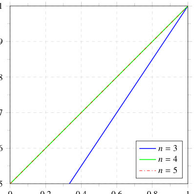
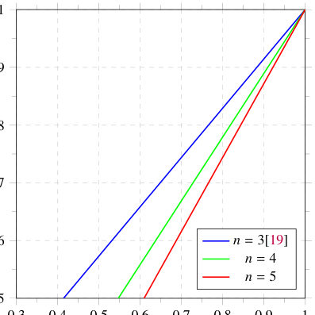
Summary. This paper compares two different Bell-operator-based protocols for the device-independent certification of GHZ states. It finds that the Svetlichny-based protocol is much more resilient to noise than the MABK-based protocol. These results provide a practical guide for implementing robust multipartite entanglement verification in quantum networks.
Why it may be interesting. This work is highly relevant for researchers in quantum networks and quantum information as it identifies the most reliable method for certifying multipartite entanglement in realistic, noisy experimental settings.
Main problem. Investigating the robustness of device-independent self-testing protocols for multipartite GHZ states against experimental imperfections like noise and finite statistics.
Main result. The study demonstrates that the Svetlichny-based self-testing protocol is significantly more robust than the MABK-based protocol, as it requires much lower Bell inequality violations to certify the state.
Method. The authors utilize the 'Self-Testing from Operator Inequality' (STOPI) framework, employing Jordan's lemma, matrix decomposition, and symmetry-based analytical techniques to derive linear lower bounds on extractable fidelity.
Model / system. The system consists of n-partite GHZ states shared among n spatially separated parties, where each party performs two dichotomic local measurements subject to a dephasing noise model.
Key observables. Extractable fidelity, Bell operator violations (Svetlichny and MABK), and the tradeoff function (extractability).
Important parameters / regimes. Number of parties (n=3, 4, 5), measurement angles (alpha), and the robustness scaling parameter (s).
Assumptions / limitations. The analysis assumes a device-independent scenario with two dichotomic measurements per party and a specific dephasing noise model.
Figures summary. Figure 1 shows the extractability for the Svetlichny protocol as a function of relative violation for n=3, 4, 5; Figure 2 shows the corresponding decrease in extractability for the MABK protocol.
Paper structure. The paper introduces the problem of self-testing robustness, defines the Bell operators and noise models, applies the STOPI framework using operator inequalities, provides explicit analytical proofs for n=3, 4, and 5, and concludes with a comparison of protocol performance.
Device-independent certification of multipartite entangled states plays a central role in a wide range of practical applications, including quantum networks, conference key agreement, and verifiable distributed quantum computation. A particularly important class of multipartite entangled states is the class of Greenberger-Horne-Zeilinger (GHZ) states. Many Bell operators have been proposed to self-test GHZ states. However, in practical scenarios, due to imperfections and the finite collection of statistics, the observed statistics do not satisfy the ideal self-testing relations. Hence, it becomes essential to investigate and compare the robustness of the different self-testing protocols. In this work, we investigate the robustness of self-testing schemes constructed from Bell operators due to Svetlichny and Mermin--Ardehali--Belinskii--Klyshko (MABK), using the analytic operator-inequality framework developed by Kaniewski [\href{https://doi.org/10.1103/PhysRevLett.117.070402}{Phys. Rev. Lett. 117, 070402 (2016)}]. We derive lower bounds on the extractable fidelity as a function of the observed value of these Bell operators. Although these protocols self-test the same underlying state, they exhibit markedly different levels of robustness. By comparing the resulting fidelity bounds, we demonstrate that the self-testing scheme based on the Svetlichny's Bell operator is the more robust among the two. Our results thus identify the Svetlichny operator based self-testing protocol as the most favorable candidate for device-independent certification of GHZ states in realistic, noisy experimental scenarios.
Authors: Benjamin Szamosfalvi, Michael Raymer, CJ Xin, Leticia Magalhaes, Jarrett Nelson, Marko Lončar, Ryan M. Camacho
Type: theory · Category: quantum information and computing · PDF: https://arxiv.org/pdf/2605.03121v1
Analysis basis: full PDF text, analyzed in chunks
Topic relevance: interference shaping light 3/5 · entanglement & information structure 2/5
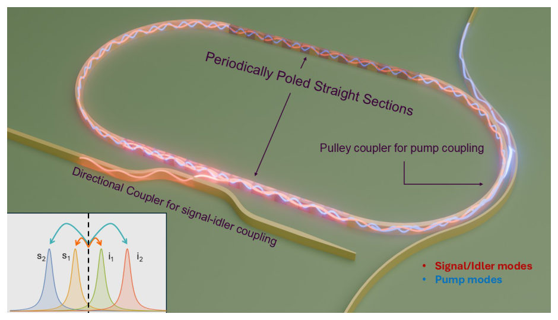
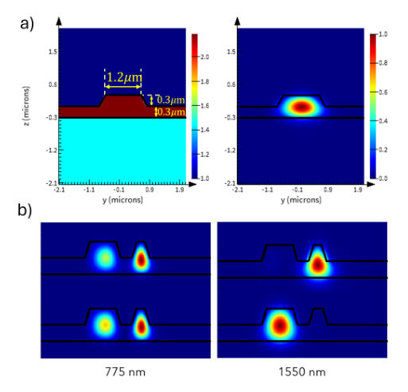
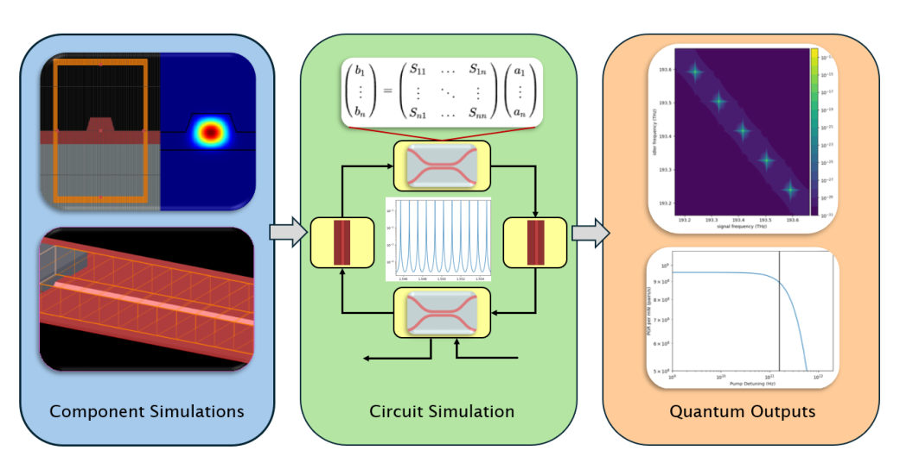
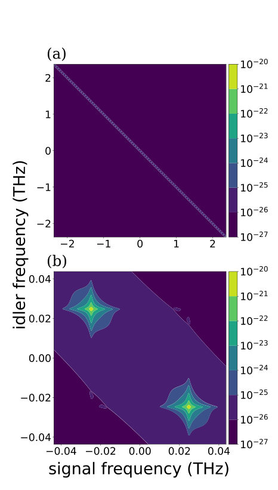
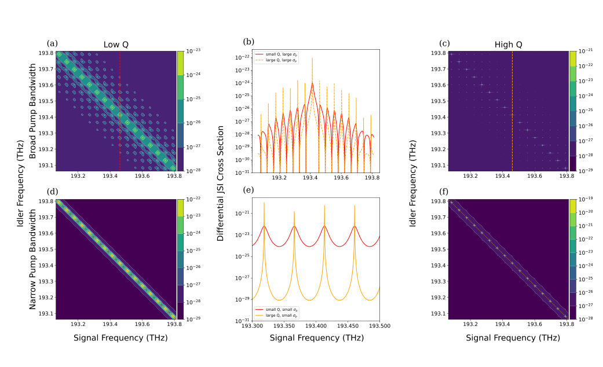
Summary. The paper presents a design strategy for integrated photonic resonators that uses classical electromagnetic simulations to predict quantum entanglement properties. By optimizing a lithium niobate racetrack resonator, the authors demonstrate the ability to support a large number of frequency-entangled photon-pair modes with high efficiency. This approach allows for the pre-fabrication optimization of high-performance sources for quantum networking.
Why it may be interesting. It provides a powerful predictive framework for engineering high-dimensional frequency-entangled states, which are essential for scalable quantum networks and frequency-domain quantum information processing.
Main problem. Designing integrated photonic cavity sources for frequency-multiplexed SPDC that simultaneously achieve high pair generation efficiency, narrow bandwidths, and high mode counts for quantum networking.
Main result. A simulated TFLN racetrack resonator design achieving 90 doubly resonant frequency-mode pairs with an effective Schmidt number of 89.62 and a total internal pair-generation-rate efficiency of 1.16 GHz/mW.
Method. A simulation pipeline combining classical full-wave electromagnetic simulations (FDTD, EME) with a new analytical framework that maps classical cavity parameters to quantum Joint Spectral Amplitude (JSA).
Model / system. An integrated photonic racetrack resonator on a thin-film lithium niobate (TFLN) platform utilizing Type-0 spontaneous parametric down-conversion (SPDC) in a periodically poled waveguide.
Key observables. Joint Spectral Amplitude (JSA), Joint Spectral Intensity (JSI), Schmidt number, Pair Generation Rate (PGR) efficiency, and Integrated Brightness Enhancement Factor (IBEF).
Important parameters / regimes. 90 resonant mode pairs, 1.08 GHz average bandwidth, 51.9 GHz Free Spectral Range (FSR), and high-Q regime (Q approx 1.78e5).
Assumptions / limitations. Uses a first-order perturbative SPDC model; assumes negligible multi-photon production; neglects small extra terms in the nonlinear interaction coefficient; assumes all interacting modes are in the fundamental TE mode.
Figures summary. Figure 1 shows the resonator structure; Figure 2 shows waveguide modes and coupler supermodes; Figure 4 shows JSA contour plots; Figure 7/8 show trade-offs between PGR and Q-factor; Figure 9/10/11 detail IBEF scaling and EME simulation accuracy.
Paper structure. The paper introduces the need for multiplexed sources, presents a new analytical-classical simulation pipeline, details the TFLN racetrack design and optimization, quantifies quantum performance metrics (JSA, Schmidt number), and concludes with a theoretical derivation of brightness enhancement.
Frequency-multiplexed entangled photon pair sources with narrow bandwidths and high pair generation efficiency are a key enabling technology for quantum networking. We present a simulation-based design study of an integrated photonic racetrack resonator source for spontaneous parametric down-conversion (SPDC) that simultaneously achieves all three properties. The central result is a simulated set of 90 doubly resonant signal/idler frequency-mode pairs with an effective Schmidt number of 89.62, average bandwidths of 1.08 GHz, a mean free spectral range of 51.9 GHz, and a total internal pair-generation-rate efficiency of 1.16 GHz/mW. Under deterministic wavelength-based splitting, the accessible frequency-state Schmidt number is reduced to 44.93. To support these predictions, we derive a closed-form analytical connection between classical cavity parameters (resonant frequencies, decay rates, coupling coefficients) and the quantum joint spectral amplitude and pair generation rate, extending the dispersive-medium quantization formalism of Raymer to the nonlinear optical cavity case. We demonstrate how classical electromagnetic field simulations can be combined with this analytical framework to predict quantum figures of merit for an integrated photonic source prior to fabrication. Fabrication and experimental validation are left for future work.
Authors: Marek Gazdzicki, Francesco Giacosa, Pawel Piesowicz
Type: theory · Category: quantum information and computing · PDF: https://arxiv.org/pdf/2605.03104v1
Analysis basis: full PDF text, analyzed in chunks
Topic relevance: entanglement & information structure 3/5 · quantum measurements 2/5
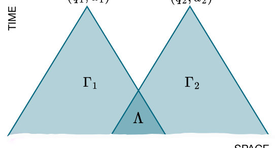
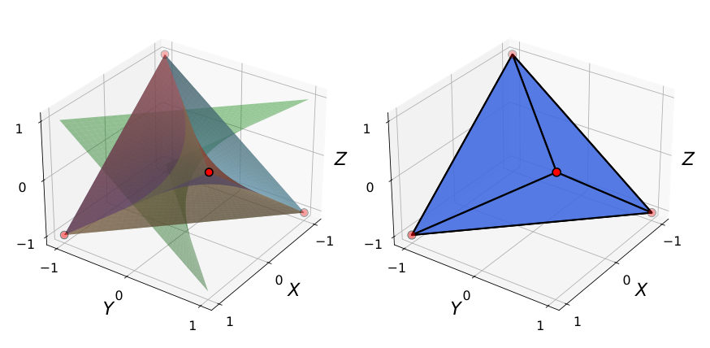
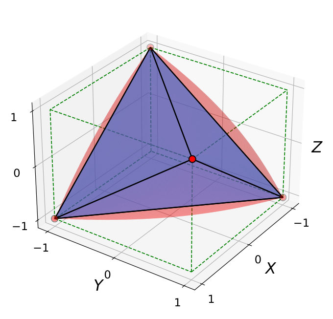
Summary. The paper simplifies the complex 36-dimensional (3,3,2,2) Bell scenario into a 3D geometric representation where the strongly-local region is a simple tetrahedron. This reduction reveals a clear nested hierarchy between strongly-local, quantum, and no-signaling models and offers a more pronounced separation of these sets than the standard CHSH case.
Why it may be interesting. It provides a highly simplified geometric visualization of the hierarchy of quantum correlations and introduces a 'diagonal-free' testing method that avoids experimental loopholes like detection efficiency or particle bunching.
Main problem. Characterizing the geometric structure of strongly-local models in the high-dimensional (3,3,2,2) Bell scenario by reducing its complexity.
Main result. The authors show that in a symmetry-reduced 3D mixed-moment space, the strongly-local region forms a regular tetrahedron (the 'pyramid') defined by only three linear inequalities, embedded within a quantum elliptope and a no-signaling cube.
Method. Symmetry reduction using site indistinguishability and projection of the 36-dimensional Bell polytope onto a 3D space of off-diagonal mixed moments (X, Y, Z).
Model / system. A bipartite Bell scenario with two spatially separated, indistinguishable sites, each having three measurement settings and two binary outcomes.
Key observables. Conditional mixed moments (products of outcomes for off-diagonal measurement settings) X, Y, and Z.
Important parameters / regimes. Three measurement settings per site (0, 1, 2) and binary outcomes (+1, -1).
Assumptions / limitations. The two measurement sites are indistinguishable (exchange symmetry) and measurement settings are independent of hidden variables.
Figures summary. Figure 1 shows a light-cone diagram of the bipartite setup; Figure 2 illustrates the boundary of factorizable models and the resulting SL tetrahedron; Figure 3 depicts the nested hierarchy of the SL tetrahedron, the quantum elliptope, and the no-signaling cube.
Paper structure. The paper introduces the (3,3,2,2) scenario, applies symmetry reduction to a 3D mixed-moment space, derives the geometric shapes and inequalities for the SL, Q, and NS regions, and compares the results to the standard CHSH case.
We present a geometric characterisation of strongly-local models in the bipartite Bell scenario with three measurement settings per site and binary outcomes, i.e.\ the (3,3,2,2) case. Restricting attention to indistinguishable sites, we introduce a three-dimensional mixed-moment space in which the mixed moments are calculated under off-diagonal measurement settings. In this reduced representation, the strongly-local region assumes the remarkably simple form of a regular tetrahedron - the 'pyramid'. We prove that only three independent linear inequalities are required to characterise this region. We call them the pyramid inequalities that separate strongly-local ($\mathcal{SL}$) models from their complement, non-strongly-local ($\mathcal{\overline{SL}}$) models. We also clarify the relation between the symmetry-reduced pyramid representation and the full (3,3,2,2) Bell polytope in the 36-dimensional conditional-probability space, which possesses 684 facet-defining inequalities. The reduction from 684 to three reflects normalisation, symmetry reduction, and projection to the mixed-moment space. In the pyramid representation, the hierarchy $\mathcal{SL} \subsetneq \mathcal{Q} \subsetneq \mathcal{NS}$ appears geometrically as a tetrahedron embedded in a somewhat larger curved body of quantum models, $\mathcal{Q}$, which in turn is embedded in a cube of no-signalling models, $\mathcal{NS}$. The qualitative and quantitative advantages of the pyramid representation over the standard CSHS representation for the (2,2,2,2) case are discussed.
Authors: Géza Tóth, József Pitrik
Type: theory · Category: quantum information and computing · PDF: https://arxiv.org/pdf/2605.03027v1
Analysis basis: full PDF text, analyzed in chunks
Topic relevance: entanglement & information structure 3/5
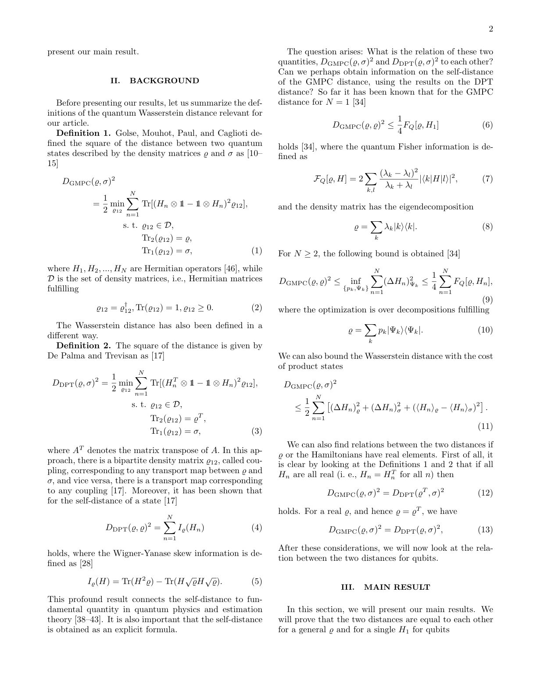
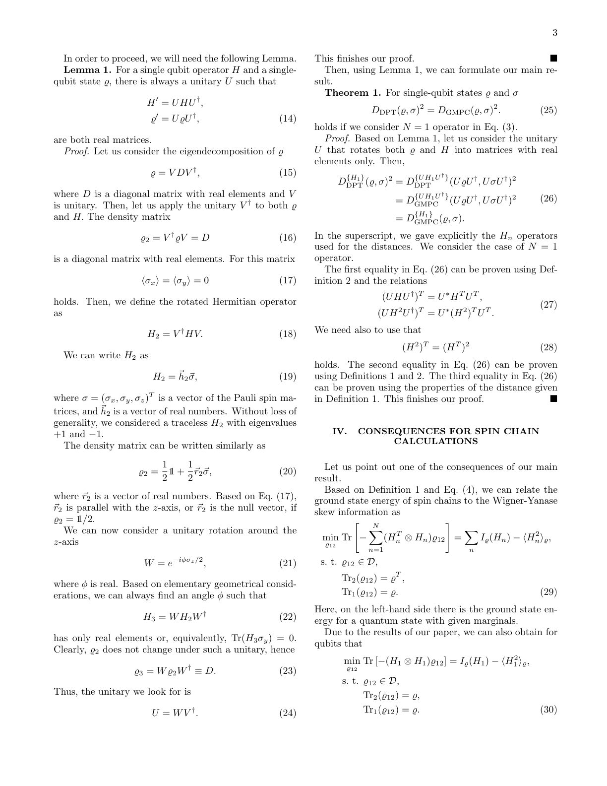
Summary. This paper proves that two different definitions of quantum Wasserstein distance are identical for qubits when using a single operator in the cost function. It further demonstrates that this equivalence allows the ground state energy of certain spin chains to be expressed directly via the Wigner-Yanase skew information.
Why it may be interesting. This is relevant for researchers in quantum information and many-body dynamics as it establishes a fundamental link between quantum optimal transport metrics and information-theoretic quantities like the Wigner-Yanase skew information.
Main problem. The paper investigates the relationship between two different definitions of the quantum Wasserstein distance for qubits: the DGMPC definition and the DPT definition.
Main result. The authors prove that for qubits, the DPT and DGMPC distances are equivalent when the cost function involves a single operator, and they show that the self-distance in this case equals the Wigner-Yanase skew information.
Method. The study uses quantum optimal transport theory, involving optimization over bipartite density matrices (couplings) with fixed marginals, and employs unitary transformations to simplify the operators into real matrices.
Model / system. The study focuses on two-level quantum systems (qubits) and considers the context of ferromagnetic spin chains.
Key observables. Quantum Wasserstein distances (D_DPT and D_DGMPC), Wigner-Yanase skew information, Quantum Fisher Information, and ground state energy of spin chains.
Important parameters / regimes. The case where the cost function contains a single operator (N=1).
Assumptions / limitations. The proven equivalence is specifically restricted to qubits and the case of a single operator in the cost function.
Paper structure. The paper begins by defining the two Wasserstein distance frameworks, introduces a lemma for unitary rotation to real matrices, provides a proof for the equivalence theorem for qubits, and concludes by relating the results to the ground state energy of spin chains.
The quantum Wasserstein distances defined by Golse, Mouhot, Paul, and Caglioti and by De Palma and Trevisan coincide for qubits when a single operator appears in the cost function. As a consequence, the self-distance equals the Wigner-Yanase skew information in this case.
Authors: Yerim Kim, Kiwmann Hwang, Hyukjoon Kwon, Yosep Kim
Type: theory · Category: quantum information and computing · PDF: https://arxiv.org/pdf/2605.03864v1
Analysis basis: abstract only; PDF text extraction failed or PDF unavailable
Topic relevance: entanglement & information structure 3/5
Summary. This paper investigates how entanglement can be used to overcome communication delays in distributed quantum machine learning. It demonstrates that while entanglement boosts classification accuracy, there is an optimal amount to use to avoid reducing the model's parameter space. This research offers a pathway for scalable quantum computing across distant nodes.
Why it may be interesting. It provides a link between nonlocality (CHSH-like correlations) and machine learning advantage, offering a strategy to perform distributed computations despite coherence-time constraints.
Main problem. Addressing the issue of communication latency in distributed quantum computing, which can exceed qubit coherence times, by using entanglement as a resource.
Main result. Entanglement improves classification accuracy in distributed quantum machine learning for binary tasks, though excessive entanglement can degrade performance by reducing the effective parameter space dimension.
Method. The study examines distributed quantum machine learning for binary classification, drawing an analogy between entanglement utility and the CHSH game.
Model / system. A distributed quantum machine learning framework for binary classification tasks involving remote nodes connected via entanglement.
Key observables. Classification accuracy and the effective dimension of the parameter space.
Important parameters / regimes. Amount and structure of entanglement in data embedding; communication latency/delay scales.
Assumptions / limitations. Entanglement can be established beforehand to mitigate the effects of latency during computation.
Paper structure. The paper introduces the problem of latency in the quantum internet, proposes entanglement as a solution, analyzes its impact on distributed machine learning accuracy, and discusses the optimization of entanglement structure.
The quantum internet aims to interconnect distant devices and enable large-scale computation through distributed quantum algorithms. One of the key obstacles is communication latency during computation. Even separations of a few hundred kilometers introduce millisecond-scale delays, which exceed the coherence times of many solid-state qubit platforms. In contrast, entanglement can be established beforehand and used as a practical resource to reduce communication complexity between remote nodes. Here we examine the utility of entanglement in distributed quantum machine learning for binary classification tasks. Drawing an analogy with the CHSH game, we show that entanglement improves classification accuracy across all datasets considered. We also find that excessive entanglement may degrade performance by reducing the effective dimension of the parameter space. This highlights the importance of using an appropriate amount and structure of entanglement in data embedding. Our findings bridge nonlocality and machine-learning advantage, providing a pathway toward distributed quantum computation beyond coherence-time constraints.
Authors: Sitanshu Gakkhar, Ala Shayeghi, David C. Del Rey Fernández
Type: theory · Category: numerical methods · PDF: https://arxiv.org/pdf/2605.03381v1
Analysis basis: full PDF text, analyzed in chunks
Topic relevance: Keldysh / 2PI / non-Gaussian methods 2/5 · analog quantum simulation 2/5 · methods for driven-dissipative 2/5 · non-equilibrium dynamics 2/5
Summary. This paper provides a rigorous functional analytic framework for the convergence of Carleman linearization, particularly for systems with unbounded operators. It replaces restrictive norm-based convergence conditions with more flexible dissipativity constraints. This allows for the valid approximation of complex nonlinear PDEs using higher-order linear hierarchies.
Why it may be interesting. This is highly relevant for researchers developing quantum algorithms for nonlinear dynamics, as it provides a rigorous mathematical foundation for the convergence of Carleman-based classical simulations of nonlinear systems.
Main problem. Establishing the convergence and well-posedness of Carleman linearization for nonlinear evolutionary equations, especially when the underlying operators are unbounded, such as in discretized partial differential equations.
Main result. The authors prove that the convergence of truncated Carleman hierarchies can be reduced to the convergence of the Trotter-Kato approximation and establish conditions for the generation of C0-semigroups and 1-integrated semigroups using dissipativity constraints.
Method. The study employs the approximation theory of strongly continuous semigroups, the Trotter-Kato approximation theorem, and Lumer-Phillips theorem, treating the nonlinear dynamics as a linear system on a free Fock space.
Model / system. Nonlinear polynomial evolutionary equations of the form phi' = W1phi + W2phi^2, with specific applications to the hyperviscous Burgers' equation and reaction-diffusion type equations.
Key observables. The solution u(t) to the nonlinear equation, recovered by projecting the solution of the linearized system onto the first tensor factor.
Important parameters / regimes. The Carleman truncation level N, the nonlinearity parameter R, the dissipativity of the linear operator W1, and the relative A-bound of the perturbation.
Assumptions / limitations. Assumes the linear part W1 is a closed, densely defined, and dissipative operator; requires the generators to be closable; and assumes certain kernel inclusions for the nonlinear terms.
Paper structure. The paper begins by defining the Carleman embedding in Fock space, moves to establishing convergence via Trotter-Kato and dissipativity analysis, addresses the unbounded operator regime using relative boundedness, and concludes with specific examples like the hyperviscous Burgers' equation.
We treat the convergence of Carleman linearization of nonlinear evolutionary equations through the approximation theory of strongly continuous semigroups, by Carleman embedding the underlying nonlinear semigroups as linear semigroups. Linear semigroup theory then lets one replace the norm constraint on the convergence of Carleman linearization in the form used by quantum algorithms for a class of semi-discretized evolution equations by a dissipativity constraint, simplifying arguments for convergence. Applying Trotter-Kato approximation theorem to the linearized semigroup realizes the semigroup as a limit finite dimensional operator exponentials, reducing the question of convergence rate of Carleman linearization to that of the Trotter-Kato approximation. We then examine convergence of the Carleman linearization as the operators become unbounded, treating the hyperviscuous Burger's equation as an example. Next we consider the perturbation theory of the Carleman semigroup and obtain conditions when polynomial nonlinearities correspond to the Carleman linearized semigroup being a $1$-integrated semigroup, so convergence is implied by variants of Trotter-Kato approximation for integrated semigroups.
Authors: Marcus Cramer, Fernando G. S. L. Brandão, Mădălin Guţă, Álvaro M. Alhambra, Matteo Scandi
Type: theory · Category: statistical mechanics · PDF: https://arxiv.org/pdf/2605.03829v1
Analysis basis: full PDF text, analyzed in chunks
Topic relevance: analog quantum simulation 2/5 · entanglement & information structure 2/5 · non-equilibrium dynamics 2/5
Summary. This paper provides a rigorous Berry-Esseen bound for quantum lattice systems, quantifying how quickly the distribution of local observables approaches a Gaussian. It shows that for systems with decaying correlations, the convergence error scales nearly as N^{-1/2}, providing an optimal rate for finite-size quantum systems.
Why it may be interesting. This provides a rigorous foundation for the Central Limit Theorem in many-body dynamics, offering precise error bounds that are crucial for understanding the validity of Gaussian approximations in large-scale quantum simulations and thermodynamic limits.
Main problem. Establishing a rigorous Berry-Esseen bound for quantum lattice systems to quantify the rate of convergence of local observable statistics toward a normal distribution.
Main result. The authors prove that for large but finite quantum lattice systems, the distribution of local observables (like energy) approaches a Gaussian with an error scaling as O(N^{-1/2} polylog(N)), which is optimal up to logarithmic factors.
Method. The proof utilizes Esseen's inequality, characteristic functions, and a differential equation approach, combined with a peeling procedure and truncated Taylor expansions to manage non-commuting local operators.
Model / system. Quantum lattice systems with N particles/sites and a local (R-local) Hamiltonian consisting of bounded operators, where the quantum state exhibits decaying spatial correlations (exponential or polynomial).
Key observables. Local observables such as energy or magnetization.
Important parameters / regimes. System size N, lattice dimension D, correlation decay rate (alpha), locality radius R, and the variance of the Hamiltonian.
Assumptions / limitations. The quantum state must have sufficiently fast decaying correlations, the Hamiltonian must be local and bounded, and the variance must scale linearly with the system size.
Figures summary. Figure 1 illustrates the partitioning of the Hamiltonian into concentric layers based on distance from an anchor point.
Paper structure. The paper establishes the setting of local Hamiltonians and decaying correlations, defines the Berry-Esseen figure of merit, uses Esseen's inequality to transform the problem into a characteristic function analysis, and employs a differential equation and operator decomposition strategy to bound the error terms.
It is expected that the statistical fluctuations of local observables in large quantum systems obey the central limit theorem, and approximate a normal distribution as their size grows. Here, we prove a version of the Berry-Esseen theorem for quantum lattice systems, which strengthens that central limit theorem by providing a rigorous convergence estimate towards the normal distribution for large but finite system size. Given a local quantum Hamiltonian on $N$ particles and a quantum state with a finite correlation length, the result states that the measurement of local observables such as the energy follows a normal distribution, up to an error scaling as $\mathcal{O}\left(N^{-\frac{1}{2}} \text{polylog}(N)\right)$, which is optimal up to logarithmic factors.
Authors: Ali Hamed Moosavian, Bahram Abedi Ravan
Type: both · Category: quantum information and computing · PDF: https://arxiv.org/pdf/2605.03612v1
Analysis basis: full PDF text, analyzed in chunks
Topic relevance: QC/QI experiment 2/5 · analog quantum simulation 2/5 · exotic spin models in light-matter 2/5
Summary. This paper challenges the claim that 'Entropy Quantum Computing' offers a new computational advantage by showing that its performance on optimization tasks is matched or exceeded by standard classical metaheuristics. The authors argue that the Dirac-3 system acts as a physically motivated classical heuristic rather than a fundamentally new quantum paradigm.
Why it may be interesting. It provides a rigorous critique of a proposed new computing paradigm by applying tools from statistical mechanics and complexity theory to assess whether environmental noise can truly be leveraged for quantum advantage.
Main problem. The paper critically evaluates the claims of computational advantage in 'Entropy Quantum Computing' (EQC) implemented via the Dirac-3 photonic system, specifically investigating if it outperforms state-of-the-art classical optimization algorithms.
Main result. The authors demonstrate that the Dirac-3 system's performance on Max-Cut and non-convex optimization problems does not exceed modern classical metaheuristics like PSO, ECA, or Simulated Annealing, and that its observed successes can be explained by classical stochastic sampling.
Method. The authors use numerical replication of the original benchmarks, implementation of classical metaheuristics in Julia, and theoretical analysis of the system's performance against known algorithmic bounds (e.g., Goemans-Williamson).
Model / system. The system is the Dirac-3, an open photonic platform using an optical-feedback loop with an amplifier, mixer, and loss medium to simulate imaginary time evolution and sample from a Boltzmann distribution.
Key observables. Cut values (Max-k-Cut), success rates, frequency distributions of cut sizes, and effective inverse temperature (beta).
Important parameters / regimes. Low mean photon numbers (weak coherent states), effective temperature (beta), and the number of nodes (n) in random graphs.
Assumptions / limitations. The analysis assumes the validity of the Unique Games Conjecture for establishing baselines and relies on the approximation that the system behaves as a Gibbs sampler.
Figures summary. Figure 1 shows the Dirac-3 schematic; Figure 2 illustrates the convergence of classical metaheuristics to a global minimum; Figure 5 shows the fit between the Boltzmann distribution model and experimental measurements.
Paper structure. The paper begins with a critique of the EQC paradigm, followed by a benchmarking of the Dirac-3 against modern classical solvers, a theoretical investigation of its performance on random graphs relative to approximation bounds, and a concluding assessment of its status as a heuristic rather than a new computing paradigm.
In this article, we take a close look at Entropy Quantum Computing (EQC), a computational paradigm developed by Quantum Computing Inc. (QCi), which deviates from mainstream quantum computing by embracing rather than battling environmental noise and decoherence arXiv:2407.04512 . In their words this approach purports EQC as an open quantum system that turns "entropy into super-power fuels of its computing engine". We show that some of the claims in the main article can be made more rigorous, and yet these are still not good enough to beat state of the art classical algorithms on conventional classical computers. Note that these conclusions reflect the technology's current early stage of development and are not meant to discourage its pursuit. Continued rigorous exploration is necessary to fully assess the long-term viability and potential advantages of this distinct computational approach.
Authors: Zhiyue Zuo, Stefano Pirandola
Type: theory · Category: quantum information and computing · PDF: https://arxiv.org/pdf/2605.03292v1
Analysis basis: full PDF text, analyzed in chunks
Topic relevance: Keldysh / 2PI / non-Gaussian methods 2/5 · entanglement & information structure 2/5 · quantum measurements 2/5
Summary. The study proposes a fault-tolerant CV-MDI-QKD protocol using GKP error correction to overcome the range limitations of current continuous-variable networks. By using non-Gaussian codes and a concatenation strategy, the researchers show that both loss and noise can be suppressed, significantly extending the secure communication distance in both fiber and wireless settings.
Why it may be interesting. This paper is highly relevant to quantum optics and open quantum systems as it demonstrates how non-Gaussian error correction (GKP codes) can be used to combat Gaussian noise and loss in bosonic channels, a central theme in developing robust quantum networks.
Main problem. The limited secure transmission range of continuous-variable measurement-device-independent quantum key distribution (CV-MDI-QKD) due to sensitivity to loss and additive Gaussian noise.
Main result. The proposed GKP-based error correction scheme suppresses both loss and operation errors below the break-even point, extending the maximum secure transmission distance in both fiber and free-space links.
Method. An enhanced asymmetric CV-MDI-QKD protocol using Gottesman-Kitaev-Preskill (GKP) oscillator-to-oscillator codes and a one-by-one concatenation method to extract error syndromes via ancilla measurements.
Model / system. An asymmetric CV-MDI-QKD network topology featuring an untrusted relay connecting Alice and Bob, utilizing coherent states, GKP ancilla modes, and Two-Mode Squeezed (TMS) operations across fiber and wireless (fading) channels.
Key observables. Secret key rate (asymptotic and composable finite-size), residual error variance, mutual information, and Holevo information.
Important parameters / regimes. GKP squeezing levels (e.g., 20 dB), channel transmittance, fiber attenuation (0.2 dB/km), and number of concatenation layers.
Assumptions / limitations. Security is analyzed against collective Gaussian attacks using the quantum de Finetti theorem; the use of a linear estimation function for error syndromes instead of MMSE.
Figures summary. Figure 1 shows the network topology and protocol schematic; Figure 2 compares key rates against the PLOB bound; Figure 3 illustrates the GKP error correction architecture and residual error variance; Figure 5 shows RCI and finite-size key rates for ideal and noisy GKP states; Figure 6 shows the PDF of error variance in fading channels.
Paper structure. The paper introduces the CV-MDI-QKD limitation, proposes a GKP-based error correction scheme using TMS operations, provides a detailed security analysis under collective attacks, evaluates performance in fiber and free-space (fading) channels, and discusses the optimization of concatenated layers.
It is well known that the repeater node is an essential ingredient for the future global quantum network, which will enable high-rate private communication and entanglement distribution over very long distances. The near-term repeater architecture uses the measurement-based node that operate without both entanglement and quantum memory, which is the main idea of the measurement-device-independent quantum key distribution (MDI-QKD) protocol. The MDI-QKD protocol removes the trust condition from the inter repeaters, while its continuous variable (CV) version, when proposed, benefited from its deterministic nature, compatible with the classical devices, and shows a high rate for the short-range local area network (LAN). Whilst the theoretical backbone of CV-MDI-QKD protocol is well established, its secure transmission range is yet limited for practical LAN. In this study, we propose an enhanced scheme for the asymmetric CV-MDI-QKD protocol by using Gottesman-Kitaev-Preskill (GKP) oscillators-to-oscillators codes, where both loss error and operation error are suppressed to below the break-even point, without any delays caused by classical heralding signals. In particular, the proposed scheme, which correlates the noises of the data and ancilla via a pair of symplectic transforms, extracts the error syndromes from stabilizer measurements on the ancilla mode and informs the data mode for a corrective displacement. Numerical analysis shows the composable finite-size security of the protocol under the collective Gaussian attack, encompassing noiseless and noisy GKP states, with both wired (i.e., fiber-based) and wireless (i.e., free-space) configurations. In addition, we demonstrate that the residual errors of the GKP code can be further reduced by the concatenation method but has a trade-off between the layers number and the finite GKP squeezing.
← Index · ← Previous · Next →